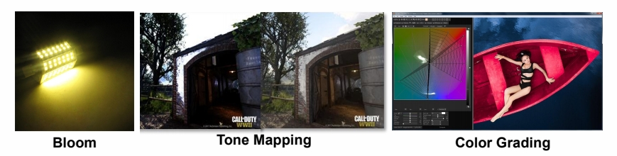
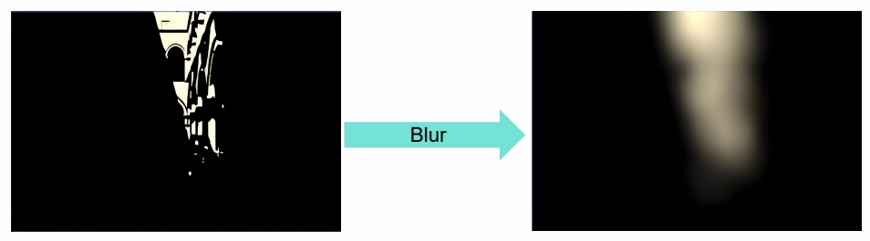
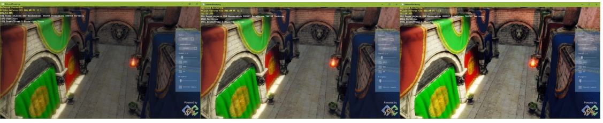
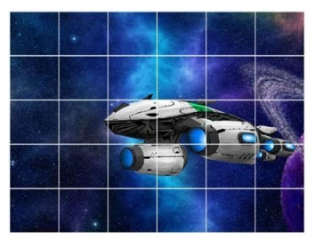
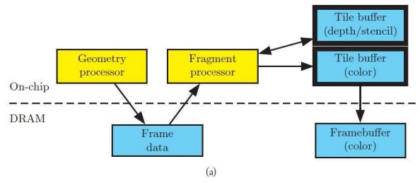

P34
Post-process
Post-process in 3D Graphics refers to any algorithm that will be applied to the final image. It can be done for stylistic reasons (color correction, contrast, etc.) or for realistic reasons (tone mapping, depth of field, etc.)

P35
Bloom Effect
P36
What is Bloom
- The physical basis of bloom is that, in the real world, lenses can never focus perfectly
- Even a perfect lens will convolve the incoming image with an Airy disk

P37
Detect Bright Area by Threshold

Find Luminance (Y) apply the standard coefficients for sRGB:
$$ Y=R_{lin}\ast 0.2126+G_{lin}\ast 0.7152+B_{lin}\ast 0.0722 $$
取出非常亮的部分，做与 5\(\times \)5 高斯 blur。
P38
Gaussian Blur

P39
Pyramid Guassian Blur

We can't do all that filtering at high resolution, so we need a way to downsample and upsample the image Need a weight coefficient to tweak final effect
在低精度图上 blur 再放大，可以得到大区域的 blur 效果同时较小的计算量。
P40
Bloom Composite

P41

P42
Tone Mapping
真实世界的亮度 range 非常大，如果曝光没调好，会出现亮部过亮或暗部过暗的效果。
P43
Tone Mapping
- No way to directly display HDR image in a SDR device
- The purpose of the Tone Mapping function is to map the wide range of high dynamic range (HDR) colors into standard dynamic range (SDR) that a display can output

用一条曲线把 HDR 映射到 SDR。
filmic curve 是一个拟合出来的所项式曲线。
P45
ACES
- Academy Color Encoding System
- Primarily for Film & Animation
- Interesting paradigms and transformations
- The useful bits
- Applying Color Grading in HDR is good
- The idea of a fixed pipeline up to the final OTD transforms stage is good
- Separates artistic intent from the mechanics of supporting different devices
ACES 曲线不但效果更好，还可以通注增加一个后处理，无差别适配到任何终端。
P46
HDR and SDR Pipeline
- Visual consistency between HDR / SDR
- Similar SDR results to previous SDR color pipeline
- High quality
- High performance
- Minimal disruption to art teams
- Simple transition from current color pipeline
- Minimal additional overhead for mastering HDR and SDR

P47
Tone Mapping Curve Comparison


P48
Color Grading
P49
Lookup Table (LUT)
-
LUT is used to remap the input color values of source pixels to new output values based on data contained within the LUT
-
A LUT can be considered as a kind of color preset that can be applied to image or footage

用一个表格实现从原始色相空间到目标色相空间的映射。
P53
Rendering Pipeline
P59
Rendering Pipeline
- Rendering pipeline is the management order of all rendering operation execution and resource allocation

P60
Forward Rendering
for n meshes
\(\quad\) for m lights
\(\quad \quad\)color += shading(mesh, light)
P61
Sort and Render Transparent after Opaque Objects

透明物质必须最后绘制。
多个透明物质则由远及近绘制，因为不同绘制顺序产生的结果是不一样的。
透明物体的排序很容易引起各种 BuG。
十几年前的主流 Pipeline。
P64
Deferred Rendering


由于光的种类非常复杂，引入延迟渲染技术，即先绘制物体，再考虑与光的关系。
近十年最主流的 Pipeline.
P65
Deferred Rendering
Pros
- Lighting is only computed for visible fragments
- The data from the G-Buffer can be used for post- processing
Cons
- High memory and bandwidth cost
- Not supporting transparent object
- Not friendly to MSAA

P66
Pilot Engine Deferred Rendering

P67
Tile-based Rendering



这个 pipeline 用于移动端。因为移动端最关心发热问题。
DRAM 存储大、速度慢、功耗高。On-chip 中的 SRAM 则相反。
因此，把整个 G-buffer 切成小的 tile 在 SRAM 计算，算好存成framebuffer。
P68
Light Culling by Tiles

P69
Depth Range Optimization
- Get Min/Max depth per tile from Pre-z pass
- Test depth bounds for each light
tile-based 是现代引擎的主流方案。
tile 的额外好处是简化光的计算。
P71
Forward+ (Tile-based Forward) Rendering
- Depth prepass (prevent overdraw / provide tile depth bounds)
- Tiled light culling (output: light list per tile)
- Shading per object (PS: Iterate through light list calculated in light culling)
P72
Cluster-based Rendering

对 Z 空间也做切分。一个小块称为 cluster。
P73
Visibility Buffer

几何信息 (V-Buffer) 和材质信息 (G-Buffer) 剥离开。
因为现在的几何越来越复杂，甚至几何密度超过像素密度。
这是现代引擎的发展方向。
P74

P75
Challenges
- Complex parallel work needs to synchronize with complex resource dependency
- Large amount of transient resource whose lifetime is shorter than one frame
- Complex resource state management
- Exploit newly exposed GPU features without extensive user low level knowledge
P76
Frame Graph
A Directed Acyclic Graph (DAG) of pass and resource dependency in a frame, not a real visual graph

Frame Graph 是未来重要的发展方向。
P77
Render to Monitor
P78
Screen Tearing

P79
Screen Tearing
In most games your GPU frame rate will be highly volatile
When new GPU frame updates in the middle of last screen frame, screen tearing occurrs

P80
V-Sync Technology
Synchronizing buffer swaps with the Vertical refresh is called V-sync
V-Sync can be used to prevent tearing but framerates are reduced, the mouse is lagging & stuttering ruins gameplay

P81
Variable Refresh Rate